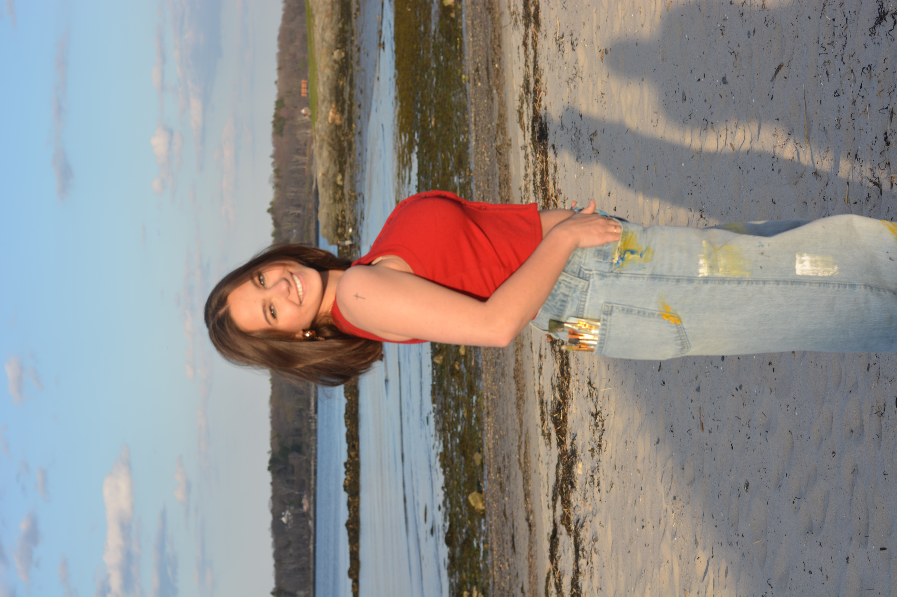

I wanted to emphasize the child aspect of the Planetarium since I had only ever gone when
I was a kid, so it felt suitable. It always felt like a movie theater, but way cooler built and showed
less cooler features. Regardless of the excitement, I went with a movie
theater-esque theme. I did this by featuring the red velvet seat
headrest and to feel more like childhood, I used the primary colors
since they are most typically related to children's toys and being playful.